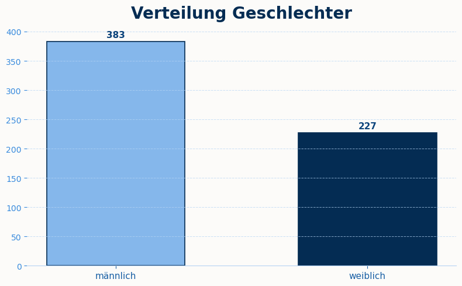
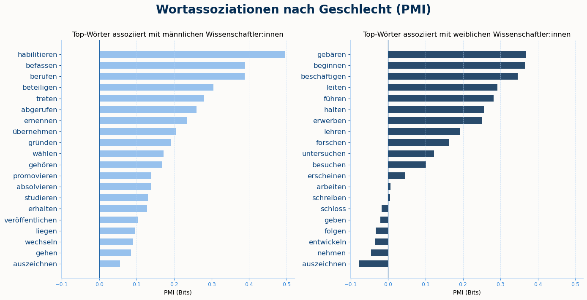
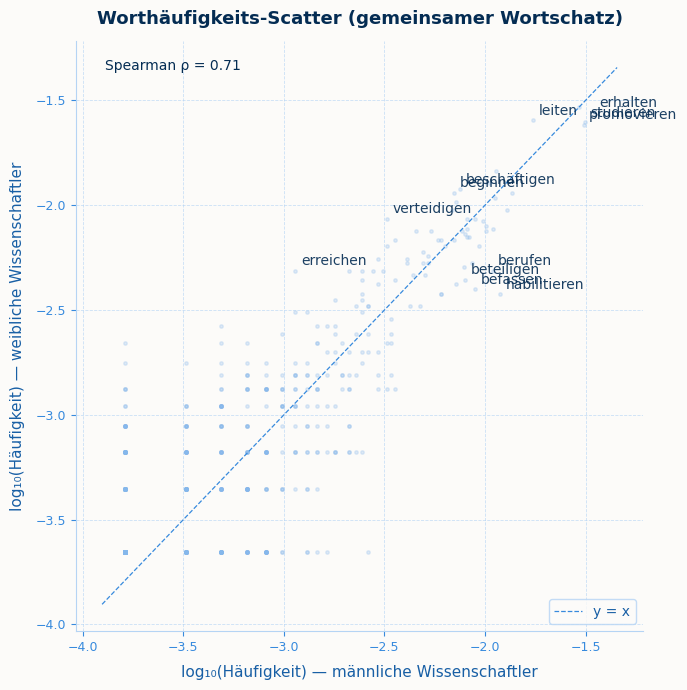
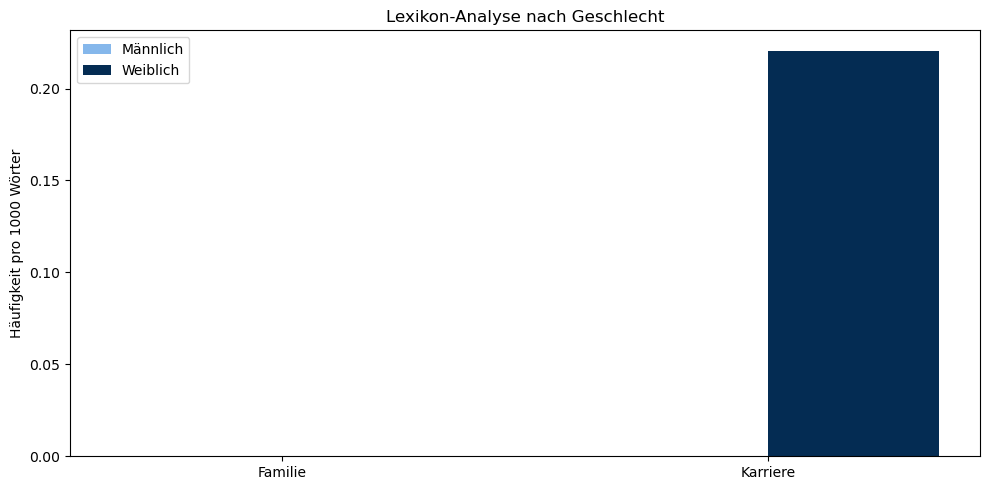

import wikipediaapi
import pandas as pd
from nltk.corpus import stopwordsGender Bias in Wikipedia-Biografien in der Wissenschaft
Gender Bias in Wikipedia-Biografien in der Wissenschaft
import sys
sys.path.append('../src')
from src.functions import plot_gender, preprocessing, rang_corr, pmi, lexikon_analyse, plot_lexikon,1 Einleitung und Motivation
Wikipedia ist das größte frei zugängliche Wissensarchiv und wird stets als neutrale Quelle bezeichnet. Gleichzeitig ist sie eine wichtige Grundlage, um beispielsweise Sprachmodelle zu trainieren (“Wikipedia” 2026) (ODER WAHRNEHMUNG ALS NEUTRALE QUELLE). Bias und Verzerrungen in den Artikeln können sich so auf nachgelagerte Systeme übertragen. Genau hier setzt unsere Arbeit an: Wir untersuchen, ob ein Gender Bias den Wikipedia-Biograhien von deutschen Wissenschaftlerinnen und Wissenschaftlern zu finden ist. Wir haben uns dabei auf eine sprachliche Auswertung fokussiert.
Ein sogenannter Gender Bias kann auf mehreren Ebenen entstehen. Strukturell sind Frauen in der Wissenschaft historisch unterrepräsentiert, was auch in Biografien auffält [Konieczny and Klein (2018)](Wagner et al. 2015). Für uns ist jedoch relevanter, wie über eine Person geschrieben wird, selbst wenn ein Artikel existiert. Graells-Garrido et al. (Graells-Garrido et al. 2015) zeigen, dass Frauenbiografien häufiger eheliche und sexialitätsbezogene Inhalte enthalten, während männliche Biografien stärker mit kongitiven Prozessen assoziiert werden. Sun und Peng (Sun and Peng 2021) weisen nach, dass private Ereignisse wie eine Heirat bei Frauen sogar im Karriere-Abschnitt auftauchen, bei Männern hingegen im Abschnitt zum Privatleben. Wagner et al. (Wagner et al. 2015) bestätigen über sechs Sprachversionen hinweg, dass Begriffe aus den Bereichen Familie und Beziehung deutlich häufiger Frauenbiografien zugeordnet werden, und Brun et al. (Brun et al. 2022) finden, dass Frauen eher mit Familie, Männer eher mit Beruf und Sport assoziiert werden.
Theoretisch interessant wird das im Kontrast zu Hydes Gender-Similarities-Hyothese (hyde_gender_2015?), wonach sich Männer und Frauen in den meisten psychologischen Merkmalen kaum unterscheiden. Zeigen sich in den Biografien trotzdem deutliche Unterschiede, spricht das eher für eine sozial konstruierte Verzerrung in der Darstellung als für reale Unterschiede. Viele Datensätze sind implizit männlich geprägt, weil Männer lange als der “Normalfall” galten.
1.1 Gender Bias
Gender Bias lässt sich in der Wikipedia-Forschung auf mehreren Ebenen unterscheiden. Wagner et al. (Wagner et al. 2015) schlagen vier Dimensionen vor: Coverage Bias (wie viele Frauen vs. Männer überhaupt einen Artikel bekommen), Structural Bias (wie Artikel im Hyperlink -Netzwerk verknüpft sind). Lexical Bias (welche Wörter zur Beschreibung verwendet werden) und Visibility Bias (welche Artikel z. B. auf der Startseite erwähnt werden). Graells-Garrido et al. (Graells-Garrido et al. 2015) fassen Bias ähnlich als systematische Asymmentrie zusammen, mit der die Dimensionen Metadaten, Sprache und Netzwerkstruktur ein Geschlecht gegenüber dem anderen begünstigen. Linguistischer Bias im engeren Sinn bezeichnet dabei eine Asymmetrie in der Wortwahl, die soziale Kategorisierungen widerspiegelt (Brun et al. 2022). Unsere Arbeit fokussiert sich auf genau diese lexikalische bzw. inhaltliche Dimension: Wir untersuchen nicht, wie viele Biografien existieren, sondern mit welchen Wörtern und Themen Wissenschaftler:innen beschrieben werden.
1.2 MATRIX OF DOMITAION
Geschlecht ist nie isoliert, sondern immer im Zusammenspiel mit anderen sozialen Kategorien wie Herkunft, Klasse oder beruflichem Status. Genau das beschreibt die Soziologin Patricia Hill Collins mit dem Konzept der “Matrix of Domination” (Collins 1990): Unterdrückungs- und Priviligierungsverhältnisse sind nicht additiv, sondern eher verschränkt. Wer in einer Hinsicht privilegiert ist, kann genauso in einer anderen benachteiligt sein. Diese Achsen lassen sich. nicht einfach zusammenfügen. Collins wendet sich damit explizit gegen Ansätze, die Kategorien wie race, class oder gender als getrennte, sich gegenseitig ausschließende Unterdrückungsformen behandeln. Treffend bringt sie das auf den Punkt, wenn sie schreibt, eine Matrix of Domination “contains few pure vicntims or opressors” (collins_black_1999?). Ein und dieselbe Person kann je nach Kontext gleichzeitig priviligiert und benachteiligt sein.
Für die Data Science ist dieser Gedanke besonders wichtig, weil Datensätze und Analyseethoden selbst Teil solcher Machtstrukturen sind. D’Ignaio und Klein (D’Ignazio and Klein 2020) greifen Collins’ Konzept explizit auf und fordern, binäre Geschlechterkategorisierungen in Daten kritisch zu hinterfragen, da sie reale soziale Komplexität verdecken - wer nur nach “männlich” und “weiblich” sortiert, blendet zwangsläufig aus, wie sich diese Kategorie mit anderen überschneidet.
Unsere Arbeit reduziert Geschlecht aus methodischen Gründen (Verfpgbarkeit der Wikipedia-Metadaten) auf eine binäre Kategorie und blendet damit andere mögliche Achsen wie Herkundt, Fachrichtung oder akademischen Status aus. Im Sinne der Matrix of Domination ist das eine bewusste Einschränkung: Die hier gefundenen Muster lassen sich nicht verallgemeinern, sondern beschreiben ausschließlich, wie sich die Kategorie Geschlecht in der sprachlichen Darstellung von Wissenschaftler:innen auf Wikipedia zeigt, wobei sie losgelöst von intersektionalen Verschränkungen ist.
1.3 Forschungsstand
Die bisherige Forschung liefert ein uneinheitliches Bild: Konienczny und Klein (konienczny_gender_2ß18?) finden auf der Ebene der Abdeckung (Coverage) über alle Wikipedia-Sprachversionen hinweg einen globalen Frauenanteil von nur rund 15-16% unter den Biografien, der seit dem 19. Jahrhundert aber stetig steigt. Wagner et al. (Wagner et al. 2015) zeigen sogar, dass Frauen im Vergleich zu externen Referenzlisten erwähnenswerter Personen auf Wikipedia eher leicht über- als unterrepräsentiert sind. Auf sprachlicher und inhaltlicher Ebene fallen die Befunde dagegen deutlich konsistenter aus. Graells-Garrido et al. (Graells-Garrido et al. 2015) zeigen, dass Frauenbiografien stärker mit Ehe und Sexualität, Männerbiografien stärker mit kognitiven Prozessen assoziiert sind und Männer im Verlinkungsnetzwerk zentraler positioniert sind. Wagner et al. (Wagner et al. 2015) bestätigen über sechs Sprachversionen, darunter Deutsch, dass Begriffe aus den Kategorien Familie, Beziehung und Geschlecht deutlich häufiger in Frauenbiografien vorkommen. Sun und Peng (Sun and Peng 2021) erweitern diese Befunde um eine andere Perspektive: Private Ereignisse wie eine Heirat erscheinen bei Frauen sogar im Karriere-Abschnitt, bei Männern hingegen im Privatleben - ein Beleg dafür, dass private und berufliche Befunde bei Frauen stärker vermischt werden. Brun et al. (Brun et al. 2022) bestätigen dies mit einem Machine-Learning Ansatz: Frauen werden eher mit Familie, Männer eher mit Beruf und Sport asoziiert, und die für Frauen typischen Adjektive fallen zudem subjektiver aus.
Als mögliche Erklärung wird in der Literatur häufig die demografische Schieflage der Wikipedia-Autor:innenschaft angeführt, von der laut Graells-Garrido et al. (Graells-Garrido et al. 2015) nur rund 16% Frauen sind. Dass die gefundenen inhaltlichen Unterschiede kaum auf reale psychologische Unterschiede zwischen den Geschlechtern zurückzuführen sind, legt Hydes Gender-Similarities-Hypothese (Hyde 2005) nahe (siehe Einleitung).
Trotz dieser umfangreichen Forschung fällt auf, dass die meisten Studien entweder die englischsprachige Wikipedia oder allgemeine Personengruppen wie Prominente, Politiker:innen oder Sportler:innen in den Blick nehmen. Spezifisch auf Wissenschaftler:innen sind rar. Genau hier setzt unsere Arbeit an, indem sie Worthäufigkeits-, PMI- und Lexikon-basierte Methoden auf eine Stichprobe deutscher Wikipedia-Biografien von Wissenschaftler:innen anwendet.
2 Daten und Methode
Daraus ergeben sich für uns folgende Forschungsfragen: 1. Bestehen sprachliche Unterschiede zwischen den Biografien von Wissenschaftler:innen? 2. Werden in Biografien bei Wissenschaftlerinnen eher private Themen (Familie, Ehe, Kinder) angesprochen, während bei Wissenschaftlern eher berufliche Themen (Karriereerfolge) im Vordergrund stehen?
Daraus leiten wir folgende Hypothesen ab: - H1: Es besteht kein signifikanter Unterschied in der Wortwahl zwischen den Biografien von Wissenschaftlerinnen und Wissenschaftlern. - H2: In den Biografien von Wissenschaftlerinnen werden private Themen wie Familie, Kinder und Ehe häufiger erwähnt. - H3: In den Biografien von Wissenschaftlern werden berufliche Themen wie Karriere, Forschung und Auszeichnungen häufiger thematisiert werden.
2.1 Datengrundlage
Für unsere Analyse werten wir 786 Wikipedia-Artikel aus(“Wikipedia” 2026). Wir betrachen die Biographien von deutschen Wissenschaftler:innen, die zwischen 1950 und 2000 geboren sind. Denn der Jüngste Wissenschaftler, über den es eine Wikipedia-Biographie gibt, ist im Jahr 2000 geboren. So haben wir die letzten 50 Jahre mit einbezogen, um eher aktuelle Biographien zu berücksichtigen. Wir wollen eine aktuellere Analyse machen, denn es ist anzunehmen, dass vor allem in den letzten Jahren eine stärkere Sensibilisierung für Gender Bias stattgefunden hat, die sich in den Biographien widerspiegeln könnte.
Zunächst haben wir mittels SPARKL-Abfrage eine Liste ausgeben lassen aller deutschen Wikipedia-Artikel Titel von Wissenschaftler:innen, die zwischen 1950 und 2000 geboren sind. Mit Hilfe der Wikipedia-API konnten wir dann die tatsächlichen Texte herunterladen und in einem DataFrame speichern. Dabei wurden die Artikel nach Geschlecht gefiltert, um zwei Gruppen zu bilden: männliche und weibliche Wissenschaftler:innen.
df_wiki = pd.read_csv("../data/wiki_results.csv")
df_wiki["title"] = df_wiki["article"].str.split("/").str[-1]
df_wiki["title"] = df_wiki["title"].str.replace("_", " ")
wiki = wikipediaapi.Wikipedia(
language='de',
user_agent='research-project'
)
data = []
for title in df_wiki["title"]:
page = wiki.page(title)
if page.exists():
data.append({
"title": title,
"text": page.text
})
df = pd.DataFrame(data)
print(df["text"][0][:1000])Geschlechterverteilung in den Wikipedia-Biografien
df = pd.read_csv("../data/wikipedia_text.csv", sep = ",") #Datensatz einlesen
plot_gender(data = df)
2.2 Preprocessing: Stopwörter, Tokenisierung und Corpora
Die Stoppwörter werden nach der Standardliste von NLTK für Deutsch und Englisch erweitert um häufige, aber wenig informative Wörter aus Wikipedia-Texten (z.B. “abgerufen”, “online”, “doi”). Die Tokenisierung erfolgt durch eine einfache Regex, die nur alphabetische Zeichen und deutsche Umlaute berücksichtigt. Wörter, die mit einem Großbuchstaben beginnen (vermutlich Substantive) werden ignoriert, um den Fokus auf Verben, Adjektive und andere Wortarten zu legen, die möglicherweise geschlechtsspezifische Assoziationen aufweisen. Gesamtheit aller Verben, die in den Texten der männlichen bzw. weiblichen Artikel vorkommen. Diese werden durch die Funktion collect_corpora erstellt, die die Texte der Artikel nach Geschlecht filtert und dann tokenisiert. Das Ergebnis ist ein Dictionary mit zwei Listen von Tokens: eine für “männlich” und eine für “weiblich”. Diese Corpora bilden die Grundlage für die anschließende Häufigkeitsanalyse und PMI-Berechnung.
STOPWORDS = set(stopwords.words("german")) | set(stopwords.words("english"))
corpora = {"männlich": [], "weiblich": []}
preprocessing(data = df, STOPWORDS = STOPWORDS, corpus = corpora)Ergebnisse
3.1 Häufigkeitsanalyse und Rang-Korrelation
Die Funktion word_frequencies berechnet die relative Häufigkeit jedes Tokens in einem gegebenen Corpus, indem sie die Anzahl der Vorkommen eines Tokens durch die Gesamtzahl der Tokens teilt. Das Ergebnis ist ein Dictionary, das jedem Token seine relative Häufigkeit zuordnet. Die Funktion rank_correlation berechnet die Spearman-Rangkorrelation zwischen den Häufigkeiten der gemeinsamen Tokens in den männlichen und weiblichen Corpora. Sie identifiziert die gemeinsamen Tokens, extrahiert ihre Häufigkeiten aus beiden Corpora und berechnet dann die Spearman-Korrelation, um zu bewerten, wie ähnlich die Rangordnungen der Token-Häufigkeiten zwischen den beiden Gruppen sind. Das Ergebnis umfasst den Korrelationskoeffizienten (ρ), den p-Wert und die Anzahl der gemeinsamen Tokens, die in die Berechnung einbezogen wurden.
Interpretation Rang Korrelation
Ein hoher Spearman-Korrelationskoeffizient (ρ) nahe 1 würde darauf hindeuten, dass die Rangordnungen der Token-Häufigkeiten in den männlichen und weiblichen Corpora sehr ähnlich sind, was auf eine geringe sprachliche Verzerrung hinweisen könnte. Ein niedrigerer ρ-Wert würde hingegen auf größere Unterschiede in der Wortwahl zwischen den beiden Gruppen hindeuten, was auf ein sehr unterschiedliches Vokabular hindeuten.
Die Rangkorrelation von ρ = 0.52 in unserer Analyse steht für eine moderate positive Korrelation zwischen den Häufigkeiten der gemeinsamen Tokens in den männlichen und weiblichen Biografien. Das bedeutet, dass es eine gewisse Ähnlichkeit in der Wortwahl gibt, aber auch signifikante Unterschiede. Einige Wörter könnten in beiden Gruppen häufig vorkommen, während andere möglicherweise in einer Gruppe deutlich häufiger sind als in der anderen. Der p-Wert von 2.3e-16 zeigt, dass diese Korrelation statistisch hoch signifikant ist, was darauf hindeutet, dass die beobachtete Ähnlichkeit nicht zufällig ist. Insgesamt deutet dies auf eine gewisse Überschneidung im Vokabular hin, aber auch auf spezifische Unterschiede in der Wortwahl zwischen männlichen und weiblichen Biografien.
Vokabular ist mäßig ähnlich Die Grundsprache ist dieselbe, aber es gibt systematische Unterschiede mehr als zwischen zwei verschiedenen Sprachen (Referenzwert 0.54), was bedeutet Männer und Frauen werden sprachlich unterschiedlicher beschrieben als man erwarten würde.
rang_corr(corpus = corpora)Rang-Korrelation (gemeinsames Vokabular, n=520):
ρ = 0.705 p = 2.27e-793.2 PMI: Wortassoziationen pro Gruppe
PMI (Pointwise Mutual Information) misst die Stärke der Assoziation zwischen einem Wort und einer Gruppe (männlich oder weiblich) im Vergleich zur allgemeinen Häufigkeit des Wortes. Ein hoher PMI-Wert für ein Wort in der Gruppe “weiblich” würde darauf hindeuten, dass dieses Wort deutlich häufiger in den Biografien von Wissenschaftlerinnen vorkommt als Hier erkennt man, welche Wörter mit welchem Geschlecht verbunden werden. Dabei wir explorativ vorgegangen, wegen alle Stoppwörter und andere Wörter, die für unser Analyse weniger relevant sind entfernt wurden, da sie sonst das Ergebnis verfälschen würden (z.B. “sein”, “haben”, “werden” etc.). Es werden nur Wörter betrachtet, die mindestens 60 Mal in den gesamten Corpora vorkommen, um eine gewisse Relevanz sicherzustellen und Rauschen durch seltene Wörter zu vermeiden. Ein hoher PMI-Wert für ein Wort in der Gruppe “weiblich” würde darauf hindeuten, dass dieses Wort deutlich häufiger in den Biografien von Wissenschaftlerinnen vorkommt als in denen von Wissenschaftlern, relativ zu seiner allgemeinen Häufigkeit. Umgekehrt würde ein hoher PMI-Wert für ein Wort in der Gruppe “männlich” darauf hindeuten, dass es stärker mit männlichen Biografien assoziiert ist. Durch die Berechnung von PMI können wir also herausfinden, welche Wörter besonders charakteristisch für die Biografien von Wissenschaftlerinnen bzw. Wissenschaftlern sind und damit mögliche geschlechtsspezifische Assoziationen in der Sprache aufdecken.
- Männlich: habilitierte, berufen, ernannt, gründete, übernahm formale Karriereschritte, Männer werden über institutionelle Positionen und Errungenschaften beschrieben.
- Weiblich: erste, begann, geboren, lehrte, leitete narrative Lebensgeschichte, Frauen werden chronologisch erzählt, mit Betonung dass sie Ausnahmen waren (erste).
pmi(corpus = corpora)Top 10 männlich assoziierte Wörter (PMI):
habilitieren +0.496
befassen +0.390
berufen +0.389
beteiligen +0.304
treten +0.280
abgerufen +0.259
ernennen +0.233
übernehmen +0.205
gründen +0.192
wählen +0.171
Top 10 weiblich assoziierte Wörter (PMI):
gebären +0.368
beginnen +0.365
beschäftigen +0.346
leiten +0.292
führen +0.282
halten +0.256
erwerben +0.252
lehren +0.192
forschen +0.162
untersuchen +0.123Scatterplot
Der Scatter-Plot zeigt die log-Häufigkeit eines Wortes bei männlichen vs. weiblichen Wissenschaftlern. - Die Diagonale (y = x) - Wörter auf der Linie kommen bei beiden Geschlechtern gleich häufig vor - Das sind meist neutrale Inhaltswörter (z.B. “Forschung”, “Universität”) - Abweichungen von der Diagonale - Wörter oberhalb häufiger bei weiblichen Wissenschaftlerinnen - Wörter unterhalb häufiger bei männlichen Wissenschaftlern - Je weiter weg von der Linie, desto stärker der Unterschied -
plot_pmi({"männlich": pmi_männlich, "weiblich": pmi_weiblich}, top_n=20)
plot_rank_scatter(freq_m = freq_m , freq_f = freq_f)

3.3 Lexikon-basierter Ansatz
LEXIKA = {
"Familie": {
"kind", "kinder", "mutter", "vater", "familie", "familien",
"heirat", "heiratete", "hochzeit", "ehe", "ehemann", "ehefrau",
"tochter", "sohn", "geschwister", "eltern", "großeltern",
"geburt", "geboren", "schwanger", "haushalt"
},
"Karriere": {
"arbeit", "beruf", "karriere", "stelle", "position", "amt",
"professur", "promotion", "habilitation", "gehalt", "preis",
"auszeichnung", "award", "stipendium", "forschung", "labor",
"publikation", "veröffentlichung", "patent", "erfindung"
}
}FUNTKTIONEN AUSLAGERN
def main():
ergebnisse = lexikon_analyse(corpora, LEXIKA)
print("\nLexikon-Analyse (pro 1000 Wörter):")
for kategorie, werte in ergebnisse.items():
print(f"\n {kategorie}:")
for gender, wert in werte.items():
print(f" {gender}: {wert:.2f}")
plot_lexikon(ergebnisse)
if __name__ == "__main__":
main()
Lexikon-Analyse (pro 1000 Wörter):
Familie:
männlich: 0.00
weiblich: 0.00
Karriere:
männlich: 0.00
weiblich: 0.22
References
Brun, Natalie Bolón, Sofia Kypraiou, Natalia Gullón Altés, and Irene Petlacalco Barrios. 2022. Wikigender: A Machine Learning Model to Detect Gender Bias in Wikipedia. arXiv. https://doi.org/10.48550/arXiv.2211.07520.
Collins, Patricia Hill. 1990. Black Feminist Thought: Knowledge, Consciousness, and the Politics of Empowerment. Unwin Hyman. https://files.commons.gc.cuny.edu/wp-content/blogs.dir/17925/files/2021/08/patricia_hill_collins_black_feminist_thought_in_the_matrix_of_domination.pdf.
D’Ignazio, Catherine, and Lauren F. Klein. 2020. Data Feminism. The MIT Press. https://data-feminism.mitpress.mit.edu/.
Graells-Garrido, Eduardo, Mounia Lalmas, and Filippo Menczer. 2015. “First Women, Second Sex: Gender Bias in Wikipedia.” Proceedings of the 26th ACM Conference on Hypertext & Social Media, HT ’15, August, 165–74. https://doi.org/10.1145/2700171.2791036.
Hyde, Janet Shibley. 2005. “The Gender Similarities Hypothesis.” The American Psychologist 60 (6): 581–92. https://doi.org/10.1037/0003-066X.60.6.581.
Konieczny, Piotr, and Maximilian Klein. 2018. “Gender Gap Through Time and Space: A Journey Through Wikipedia Biographies via the Wikidata Human Gender Indicator.” New Media & Society 20 (12): 4608–33. https://doi.org/10.1177/1461444818779080.
Sun, Jiao, and Nanyun Peng. 2021. Men Are Elected, Women Are Married: Events Gender Bias on Wikipedia. https://doi.org/10.48550/arXiv.2106.01601.
Wagner, Claudia, David Garcia, Mohsen Jadidi, and Markus Strohmaier. 2015. It’s a Man’s Wikipedia? Assessing Gender Inequality in an Online Encyclopedia. https://doi.org/10.48550/arXiv.1501.06307.
“Wikipedia.” 2026. In Wikipedia. https://de.wikipedia.org/wiki/Wikipedia:Hauptseite.